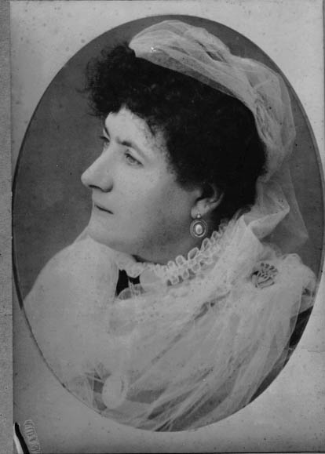

Historical record
Ann Freebody
(1859-1921)
Death evidence recorded
Events and attributes
| Sex | Female | |
|---|---|---|
| Birth | 1859 | Speen, Newbury, Berkshire |
| Death | 1921 | Auburn NSW, Australia |
Parents and siblings
Parental family
Parents shown publicly
Marriage: 1853 · Newbury, Berkshire
Other children shown publicly
Partners and children
Partner family
Partners shown publicly
Marriage: 1887 · Balmain, NSW Australia.
Children shown publicly
No publicly eligible children in this family.
Associated photographs
These preserved photographs were linked to this person on the original family website.
